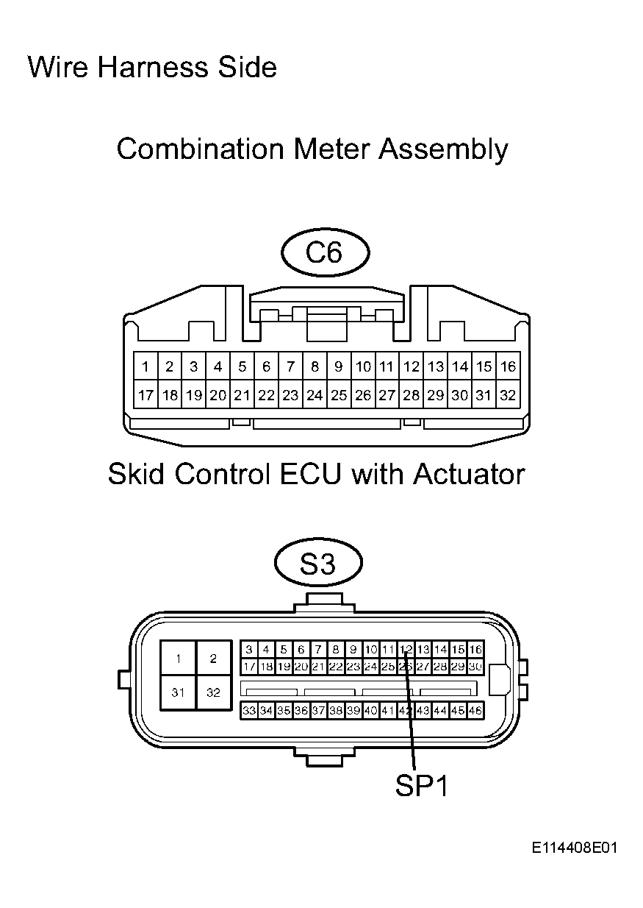
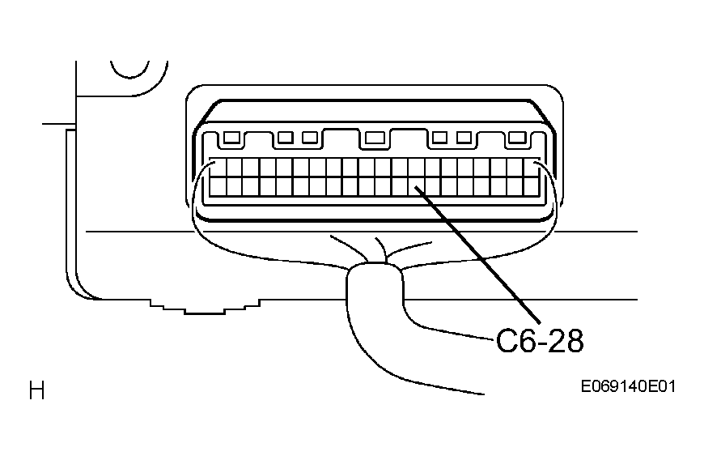

Inspection Procedure
HINT:
When using the intelligent tester, start from *1. When not using the intelligent tester, start from *2.
- READ VALUE OF INTELLIGENT TESTER (VEHICLE SPEED SIGNAL)*1
- Check the DATA LIST for proper functioning of the vehicle speed signal.
Skid control ECU with actuator
DATA LIST - SKID CONTROL ECU WITH ACTUATORItem Measurement Item / Range (Display) Normal Condition Diagnostic Note VEHICLE SPD Wheel speed sensor (FR) reading / Min.: 0 km/h (0 mph), Max.: 326 km/h (202 mph) Actual vehicle Speed indicator on speedometer OK:
Vehicle speed display on the tester is almost the same as the actual vehicle speed.
NG : GO TO VEHICLE STABILITY CONTROL SYSTEM
OK : Go to Next Step
- Check the DATA LIST for proper functioning of the vehicle speed signal.
- CHECK (COMBINATION METER - SKID CONTROL ECU WITH ACTUATOR)*2
- Disconnect the C6 meter connector.
- Disconnect the S3 ECU connector.
- Measure the resistance of the wire harness side connectors.
Standard resistance
TESTER CONNECTION SPECIFIED CONDITIONTester Connection Specified Condition C6-28 - S3-12 (SP1) Below 1 Ω C6-28 - Body ground 10 kΩ or higher
NG : REPAIR OR REPLACE HARNESS AND CONNECTOR

Courtesy of © TOYOTA, LICENSE AGREEMENT TMS1002OK : Go to Next Step
- CHECK COMBINATION METER ASSEMBLY
- Measure the voltage of the connector.
Standard voltage
TESTER CONNECTION SPECIFIED CONDITIONTester Connection Condition Specified Condition C6-28 - Body ground Ignition switch ON 10 to 14 V Ignition switch OFF Below 1 V
NG : REPLACE COMBINATION METER ASSEMBLY

Courtesy of © TOYOTA, LICENSE AGREEMENT TMS1002OK : REPLACE BRAKE ACTUATOR ASSEMBLY
- Measure the voltage of the connector.